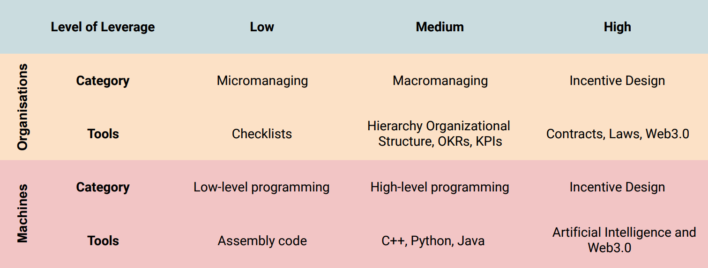

First Principles Thinking: Incentive Design In Web3
Published on 2022-06-26
Let's see from first principles why Web3 is a breakthrough in our ability to design incentives, why it matters and what are some concrete examples of this.
Go!
First Principles Analysis On Incentive Design
To incentivise people, we need to promise them a reward (e.g. a bonus) conditional on an event (e.g. performance), and people need to trust our promise. A trustworthy promise must be enforceable, which traditionally means that we've written a contract that is enforceable by Law.
The traditional tools for incentive design are stocks, options, performance-based bonuses, profit sharing, affiliate programs, royalties, patents, etc. These tools were built by lobbyists, lawyers and policymakers. To put it mildly, these are not known to be the fastest builders in the world.
If someone wants to come up with a new way to incentivise people in their organisation, they'll need: - an army of lawyers - budget for lobbyists - budget for legal fees - patience, patience, patience
Just ask Uber or Airbnb about their legal expenses!
Crypto had two undisputed breakthroughs that together give us an alternative: 1. Digital money: cryptocurrencies that can be traded for goods and services (or other currencies). 2. Smart contracts: contracts that are enforced by the code that is written in them instead of by a court of law.
With these two new tools, people can now promise a reward (e.g. cryptocurrency) conditional on an event (e.g. performance) and have others trust their promise by writing it on a smart contract. In other words, people can do incentive design; all they need is to write a smart contract.
Why Does It Matter?
Incentive design is humanity's highest leverage tool to run complex organisations and complex networks of machines. Our current tools for incentive design had an enormous impact on our progress, but it is essential not to stop there. We should have lower barriers to innovation in incentive structures to speed up our progress as a civilisation.
 Tools to run machines and organisations at different degrees of leverage.
Leverage is a force multiplier for our actions. Do a small action, apply a big leverage and get a big result. Without high-leverage tools, individuals wouldn't be able to build and manage big systems.
You can't run a big organisation by micromanaging everything the employees do, as you can't build a big program by micromanaging everything the computer does (aka writing assembly code). To gain scale, we must sacrifice some control over the details and obtain leverage.
As Charlie Munger once said:
"show me the incentives, I'll show you the outcome"
How To Design Good Incentives?
Good incentive design is similar to AI design. Here are the three steps to make it work:
Step One: define the metric you want to maximise.
An AI system may want to maximise its prediction accuracy or its score on a game (e.g. its score at playing chess), while an organisation may want to maximise its profit or members' welfare.
Step Two: find a way to measure the contribution of each individual to the metric being maximised.
AI measures the contribution of each neuron by doing backpropagation. Traditional organisations may measure contribution through performance reviews, for example.
Step Three: reward each individual according to their contribution to the metric and increase (or decrease) their influence on the metric if they correspondingly had a positive (or negative) effect.
AI changes the weight of each neuron according to its contribution. Neurons that gained weight will have more say in the next prediction, and neurons that loss weight will have less say.
For an organisation to improve at every iteration (just like an AI), we want the top performers to have progressively more say and the worst to have less. Traditionally, this happens through promotions and firings.
A Concrete Example
My favourite example is Numerai which clearly shows that doing incentive design is similar to building AI.
Numerai is a decentralised hedge fund with the goal of predicting the stock market (i.e. to maximise its accuracy).
Anyone can submit an AI model and stake a cryptocurrency (NMR) to show their confidence in their model. Numerai aggregates all models' predictions to make a final prediction, giving them more or less say according to how much NMR is staked in those models.
When the truth is revealed, Numerai uses backpropagation to learn how each model has contributed to the final accuracy. Models with a positive contribution receive more NMR, and models with a negative contribution lose NMR.
This is a positive-sum game if the hedge fund can profit from its predictions. So far, Numerai has paid out $21.6 million to data scientists through this incentive structure.
This blogpost mentions other examples that I won't get into: - Filecoin: A commodity market for storage - Helium: Incentivisation layer for the LoRaWAN network - Golden.xyz: Incentivised structured knowledge protocol
I am currently working on an incentive design to create a newspaper to maximise readers' satisfaction.
At every publication, the newspaper gets better at fulfilling its goal and pays all participants according to their contributions.